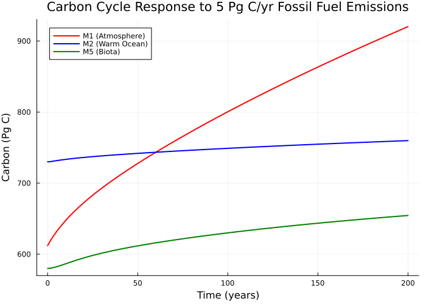
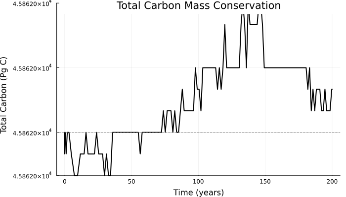
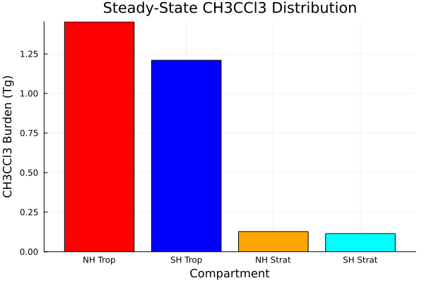

Global Cycles: Sulfur and Carbon
Overview
This module implements three global-scale atmospheric/Earth system models from Chapter 22 of Seinfeld and Pandis (2006). These models describe the cycling of sulfur and carbon through Earth's atmosphere and surface reservoirs, and provide a framework for understanding atmospheric residence times and the fate of trace species.
The implementation provides ModelingToolkit.jl components for:
- SulfurCycle: Steady-state atmospheric sulfur cycle model (Equations 22.6-22.15) describing SO2 and sulfate residence times based on removal by dry deposition, wet deposition, and chemical conversion
- CarbonCycle: Six-compartment global carbon cycle model (Table 22.1) with atmosphere-ocean-biosphere exchange, based on Schmitz (2002)
- FourCompartmentAtmosphere: Four-box atmospheric transport model (Equations 22.26-22.41) for trace species with interhemispheric and troposphere-stratosphere exchange
Reference: Seinfeld, J.H. and Pandis, S.N. (2006). Atmospheric Chemistry and Physics: From Air Pollution to Climate Change, 2nd Edition, Chapter 22: Global Cycles: Sulfur and Carbon. John Wiley & Sons, Inc.
AtmosphericDynamics.SulfurCycle — Function
SulfurCycle(; name=:SulfurCycle)Return a ModelingToolkit.System implementing the steady-state atmospheric sulfur cycle from Chapter 22.1 of Seinfeld and Pandis (2006), "Atmospheric Chemistry and Physics", 2nd Edition.
The model describes the exchange of sulfur between SO2 and sulfate (SO4^2-) reservoirs in the atmosphere. SO2 is emitted from natural and anthropogenic sources, removed by dry deposition, wet deposition, and chemical conversion to sulfate. Sulfate is removed by dry and wet deposition.
Equations 22.6-22.15 are implemented as algebraic relations. The system uses first-order rate constants for all removal processes.
Default residence time values are from Rodhe (1978).
Reference: Seinfeld, J. H. and Pandis, S. N. (2006), Atmospheric Chemistry and Physics: From Air Pollution to Climate Change, 2nd Ed., John Wiley & Sons, Ch. 22, pp. 1003-1007.
AtmosphericDynamics.CarbonCycle — Function
CarbonCycle(; name=:CarbonCycle)Return a ModelingToolkit.System implementing the six-compartment model of the global carbon cycle from Table 22.1 of Seinfeld and Pandis (2006), based on Schmitz (2002).
The model tracks carbon exchange among seven reservoirs:
- Atmosphere (M1)
- Warm ocean surface waters (M2)
- Cool ocean surface waters (M3)
- Deep ocean waters (M4)
- Terrestrial biota (M5)
- Soils and detritus (M6)
- Fossil fuels (M7)
Plus a scaling factor G(t) for permanent land-use change effects on biotic uptake.
External forcing functions Ff(t), Fd(t), and Fr(t) represent fossil fuel emissions, deforestation, and reforestation fluxes respectively.
All mass quantities are in kg (SI units). Time is in seconds (SI units). The source material uses Pg C (1 Pg = 10^12 kg) and years (1 yr = 31557600 s). Conversions are applied to maintain SI unit consistency.
Default parameter values and initial conditions correspond to the preindustrial (~1850) steady state from Schmitz (2002) as presented in Figure 22.6 and Table 22.1.
Reference: Seinfeld, J. H. and Pandis, S. N. (2006), Atmospheric Chemistry and Physics: From Air Pollution to Climate Change, 2nd Ed., John Wiley & Sons, Ch. 22, pp. 1009-1015. Schmitz, R. A. (2002), The Earth's carbon cycle, Chem. Eng. Educ., 296.
AtmosphericDynamics.FourCompartmentAtmosphere — Function
FourCompartmentAtmosphere(; name=:FourCompartmentAtmosphere)Return a ModelingToolkit.System implementing the four-compartment steady-state atmospheric model from Section 22.3 of Seinfeld and Pandis (2006).
The model divides the atmosphere into four reservoirs: NH troposphere, SH troposphere, NH stratosphere, and SH stratosphere. A substance emitted into the troposphere is exchanged between compartments and removed by first-order processes (e.g., OH reaction in the troposphere, photolysis in the stratosphere, surface deposition).
The steady-state analytical solution (Eqs. 22.38-22.39, 22.34-22.35) gives the substance quantity in each reservoir as a function of source rates and all transport/removal parameters.
All quantities are in SI units (kg for mass, s for time). The source material uses years for time and grams for mass. Conversions are applied to maintain SI unit consistency.
Default parameter values correspond to the CH3CCl3 example in Section 22.3.
Reference: Seinfeld, J. H. and Pandis, S. N. (2006), Atmospheric Chemistry and Physics: From Air Pollution to Climate Change, 2nd Ed., John Wiley & Sons, Ch. 22, pp. 1018-1022.
Implementation
using AtmosphericDynamics
using DataFrames, ModelingToolkit, Symbolics, DynamicQuantitiesSulfur Cycle (Section 22.1, Equations 22.6-22.15)
The sulfur cycle model describes the residence times of atmospheric sulfur species (SO2 and SO4) based on removal processes. SO2 is removed by dry deposition, wet deposition, and chemical conversion to sulfate. Sulfate is removed by dry and wet deposition.
The key equations are:
- Eq. 22.8: Overall SO2 residence time: $1/\tau_{SO_2} = 1/\tau_{SO_2,d} + 1/\tau_{SO_2,w} + 1/\tau_{SO_2,c}$
- Eq. 22.9: Overall SO4 residence time: $1/\tau_{SO_4} = 1/\tau_{SO_4,d} + 1/\tau_{SO_4,w}$
- Eq. 22.7: Fraction converted to sulfate: $b = \tau_{SO_2}/\tau_{SO_2,c}$
- Eq. 22.6: Mean residence time of a sulfur atom: $\tau_S = \tau_{SO_2} + b \cdot \tau_{SO_4}$
Default parameter values are from Rodhe (1978):
| Parameter | Value | Description |
|---|---|---|
| τ_SO2_d | 60 hr | SO2 dry deposition residence time |
| τ_SO2_w | 100 hr | SO2 wet deposition residence time |
| τ_SO2_c | 80 hr | SO2 chemical conversion residence time |
| τ_SO4_d | 400 hr | SO4 dry deposition residence time |
| τ_SO4_w | 80 hr | SO4 wet deposition residence time |
State Variables
sys = SulfurCycle()
vars = unknowns(sys)
DataFrame(
:Name => [string(Symbolics.tosymbol(v, escape = false)) for v in vars],
:Units => [string(ModelingToolkit.get_unit(v)) for v in vars],
:Description => [ModelingToolkit.getdescription(v) for v in vars]
)| Row | Name | Units | Description |
|---|---|---|---|
| String | String | String | |
| 1 | τ_SO2 | 1.0 s | Overall SO2 residence time |
| 2 | τ_SO4 | 1.0 s | Overall SO4 residence time |
| 3 | b | 1.0 | Fraction of S converted to SO4 before removal (dimensionless) |
| 4 | τ_S | 1.0 s | Mean residence time of a sulfur atom |
| 5 | c | 1.0 | Fraction of total sulfur that is SO2 (dimensionless) |
| 6 | τ_S_d | 1.0 s | Sulfur dry deposition residence time |
| 7 | τ_S_w | 1.0 s | Sulfur wet deposition residence time |
Parameters
params = parameters(sys)
DataFrame(
:Name => [string(Symbolics.tosymbol(p, escape = false)) for p in params],
:Units => [string(ModelingToolkit.get_unit(p)) for p in params],
:Description => [ModelingToolkit.getdescription(p) for p in params]
)| Row | Name | Units | Description |
|---|---|---|---|
| String | String | String | |
| 1 | τ_SO2_d | 1.0 s | SO2 dry deposition residence time (60 hr) |
| 2 | τ_SO2_w | 1.0 s | SO2 wet deposition residence time (100 hr) |
| 3 | τ_SO4_w | 1.0 s | SO4 wet deposition residence time (80 hr) |
| 4 | τ_SO2_c | 1.0 s | SO2 chemical conversion residence time (80 hr) |
| 5 | τ_SO4_d | 1.0 s | SO4 dry deposition residence time (400 hr) |
Equations
equations(sys)\[ \begin{align} \frac{1}{\mathtt{\tau\_SO2}\left( t \right)} &= \frac{1}{\mathtt{\tau\_SO2\_c}} + \frac{1}{\mathtt{\tau\_SO2\_d}} + \frac{1}{\mathtt{\tau\_SO2\_w}} \\ \frac{1}{\mathtt{\tau\_SO4}\left( t \right)} &= \frac{1}{\mathtt{\tau\_SO4\_d}} + \frac{1}{\mathtt{\tau\_SO4\_w}} \\ b\left( t \right) &= \frac{\mathtt{\tau\_SO2}\left( t \right)}{\mathtt{\tau\_SO2\_c}} \\ \mathtt{\tau\_S}\left( t \right) &= \mathtt{\tau\_SO2}\left( t \right) + \mathtt{\tau\_SO4}\left( t \right) b\left( t \right) \\ c\left( t \right) &= \frac{1}{1 + \frac{\mathtt{\tau\_SO4}\left( t \right) b\left( t \right)}{\mathtt{\tau\_SO2}\left( t \right)}} \\ \frac{1}{\mathtt{\tau\_S\_d}\left( t \right)} &= \frac{1 - c\left( t \right)}{\mathtt{\tau\_SO4\_d}} + \frac{c\left( t \right)}{\mathtt{\tau\_SO2\_d}} \\ \frac{1}{\mathtt{\tau\_S\_w}\left( t \right)} &= \frac{1 - c\left( t \right)}{\mathtt{\tau\_SO4\_w}} + \frac{c\left( t \right)}{\mathtt{\tau\_SO2\_w}} \end{align} \]
Carbon Cycle (Section 22.2, Table 22.1)
The carbon cycle model implements the six-compartment model from Table 22.1, based on Schmitz (2002). It tracks carbon exchange among seven reservoirs:
- Atmosphere (M1) - 612 Pg C preindustrial
- Warm ocean surface waters (M2) - 730 Pg C
- Cool ocean surface waters (M3) - 140 Pg C
- Deep ocean (M4) - 37,000 Pg C
- Terrestrial biota (M5) - 580 Pg C
- Soils and detritus (M6) - 1500 Pg C
- Fossil fuels (M7) - 5300 Pg C
Transfer coefficients from Table 22.1 (Schmitz, 2002):
| Coefficient | Value (yr⁻¹) | Description |
|---|---|---|
| k₁₂ | 0.0931 | Atmosphere → warm ocean |
| k₁₃ | 0.0311 | Atmosphere → cool ocean |
| k₂₃ | 0.0781 | Warm ocean → cool ocean |
| k₂₄ | 0.0164 | Warm ocean → deep ocean |
| k₃₄ | 0.714 | Cool ocean → deep ocean |
| k₄₂ | 0.00189 | Deep ocean → warm ocean |
| k₄₃ | 0.00114 | Deep ocean → cool ocean |
| k₅₁ | 0.0862 | Biota → atmosphere |
| k₅₆ | 0.0862 | Biota → soils/detritus |
| k₆₁ | 0.0333 | Soils/detritus → atmosphere |
Nonlinear parameters from Table 22.1:
| Parameter | Value | Description |
|---|---|---|
| β₂ | 9.4 | Warm ocean carbonate buffer exponent |
| β₃ | 10.2 | Cool ocean carbonate buffer exponent |
| γ | 62 Pg C | CO2 uptake threshold for biota |
| Γ | 198 Pg C | CO2 saturation parameter for biota |
| a_d | 0.230 | Deforestation land-use change fraction |
| a_r | 1.0 | Reforestation land-use change fraction |
Key features:
- Nonlinear ocean-atmosphere fluxes with carbonate buffer chemistry (Eq. 22.18): $F_{21} = k_{21} M_2^{\beta_2}$
- Saturating biotic CO2 uptake (Eq. 22.19): $F_{15} = k_{15} G (M_1 - \gamma) / (M_1 + \Gamma)$
- Land-use change scaling factor G (Eq. 22.21): $dG/dt = -(a_d F_d - a_r F_r) / M_5(0)$
- External forcing: fossil fuel emissions (Ff), deforestation (Fd), reforestation (Fr)
All mass quantities are in SI units (kg). Time is in seconds. The source material uses Pg C (1 Pg = 10^12 kg) and years (1 yr = 31557600 s).
State Variables
sys_carbon = CarbonCycle()
vars = unknowns(sys_carbon)
DataFrame(
:Name => [string(Symbolics.tosymbol(v, escape = false)) for v in vars],
:Units => [string(ModelingToolkit.get_unit(v)) for v in vars],
:Description => [ModelingToolkit.getdescription(v) for v in vars]
)| Row | Name | Units | Description |
|---|---|---|---|
| String | String | String | |
| 1 | M1 | 1.0 kg | Carbon in atmosphere |
| 2 | M2 | 1.0 kg | Carbon in warm ocean surface waters |
| 3 | M3 | 1.0 kg | Carbon in cool ocean surface waters |
| 4 | M4 | 1.0 kg | Carbon in deep ocean waters |
| 5 | M5 | 1.0 kg | Carbon in terrestrial biota |
| 6 | M6 | 1.0 kg | Carbon in soils and detritus |
| 7 | M7 | 1.0 kg | Carbon in fossil fuels |
| 8 | G | 1.0 | Deforestation/reforestation scaling factor (dimensionless) |
| 9 | F15_flux | 1.0 kg s⁻¹ | Atmosphere to biota flux |
| 10 | F21_flux | 1.0 kg s⁻¹ | Warm ocean to atmosphere flux |
| 11 | F31_flux | 1.0 kg s⁻¹ | Cool ocean to atmosphere flux |
Parameters
params = parameters(sys_carbon)
DataFrame(
:Name => [string(Symbolics.tosymbol(p, escape = false)) for p in params],
:Units => [string(ModelingToolkit.get_unit(p)) for p in params],
:Description => [ModelingToolkit.getdescription(p) for p in params]
)| Row | Name | Units | Description |
|---|---|---|---|
| String | String | String | |
| 1 | γ_c | 1.0 kg | CO2 uptake threshold for biota |
| 2 | M2_pre | 1.0 kg | Preindustrial warm ocean surface carbon |
| 3 | F31_pre | 1.0 kg s⁻¹ | Preindustrial cool ocean to atmosphere flux |
| 4 | a_r | 1.0 | Fraction of reforested area increasing biota (dimensionless) |
| 5 | Fd | 1.0 kg s⁻¹ | Deforestation flux |
| 6 | k13 | 1.0 s⁻¹ | Atmosphere to cool ocean transfer coefficient |
| 7 | Γ_c | 1.0 kg | CO2 saturation parameter for biota |
| 8 | M3_pre | 1.0 kg | Preindustrial cool ocean surface carbon |
| 9 | k42 | 1.0 s⁻¹ | Deep ocean to warm ocean transfer coefficient |
| 10 | k61 | 1.0 s⁻¹ | Soils/detritus to atmosphere transfer coefficient |
| 11 | F21_pre | 1.0 kg s⁻¹ | Preindustrial warm ocean to atmosphere flux |
| 12 | k34 | 1.0 s⁻¹ | Cool ocean to deep ocean transfer coefficient |
| 13 | k15 | 1.0 kg s⁻¹ | Atmosphere to biota base uptake rate |
| 14 | k24 | 1.0 s⁻¹ | Warm ocean to deep ocean transfer coefficient |
| 15 | k56 | 1.0 s⁻¹ | Biota to soils/detritus transfer coefficient |
| 16 | M5_0 | 1.0 kg | Preindustrial terrestrial biota carbon |
| 17 | β3 | 1.0 | Cool ocean carbonate buffer exponent (dimensionless) |
| 18 | Ff | 1.0 kg s⁻¹ | Fossil fuel emissions |
| 19 | k23 | 1.0 s⁻¹ | Warm ocean to cool ocean transfer coefficient |
| 20 | Fr | 1.0 kg s⁻¹ | Reforestation flux |
| 21 | a_d | 1.0 | Fraction of deforested area unavailable for regrowth (dimensionless) |
| 22 | k51 | 1.0 s⁻¹ | Biota to atmosphere transfer coefficient |
| 23 | k12 | 1.0 s⁻¹ | Atmosphere to warm ocean transfer coefficient |
| 24 | k43 | 1.0 s⁻¹ | Deep ocean to cool ocean transfer coefficient |
| 25 | β2 | 1.0 | Warm ocean carbonate buffer exponent (dimensionless) |
Equations
equations(sys_carbon)\[ \begin{align} \frac{\mathrm{d} \mathtt{M1}\left( t \right)}{\mathrm{d}t} &= \mathtt{Fd} + \mathtt{Ff} - \mathtt{Fr} + \mathtt{F21\_flux}\left( t \right) + \mathtt{F31\_flux}\left( t \right) - \mathtt{F15\_flux}\left( t \right) + \left( - \mathtt{k12} - \mathtt{k13} \right) \mathtt{M1}\left( t \right) + \mathtt{k51} \mathtt{M5}\left( t \right) + \mathtt{k61} \mathtt{M6}\left( t \right) \\ \frac{\mathrm{d} \mathtt{M2}\left( t \right)}{\mathrm{d}t} &= - \mathtt{F21\_flux}\left( t \right) + \mathtt{k12} \mathtt{M1}\left( t \right) - \left( \mathtt{k23} + \mathtt{k24} \right) \mathtt{M2}\left( t \right) + \mathtt{k42} \mathtt{M4}\left( t \right) \\ \frac{\mathrm{d} \mathtt{M3}\left( t \right)}{\mathrm{d}t} &= - \mathtt{F31\_flux}\left( t \right) + \mathtt{k13} \mathtt{M1}\left( t \right) + \mathtt{k23} \mathtt{M2}\left( t \right) - \mathtt{k34} \mathtt{M3}\left( t \right) + \mathtt{k43} \mathtt{M4}\left( t \right) \\ \frac{\mathrm{d} \mathtt{M4}\left( t \right)}{\mathrm{d}t} &= \mathtt{k24} \mathtt{M2}\left( t \right) + \mathtt{k34} \mathtt{M3}\left( t \right) - \left( \mathtt{k42} + \mathtt{k43} \right) \mathtt{M4}\left( t \right) \\ \frac{\mathrm{d} \mathtt{M5}\left( t \right)}{\mathrm{d}t} &= - \mathtt{Fd} + \mathtt{Fr} + \mathtt{F15\_flux}\left( t \right) - \left( \mathtt{k51} + \mathtt{k56} \right) \mathtt{M5}\left( t \right) \\ \frac{\mathrm{d} \mathtt{M6}\left( t \right)}{\mathrm{d}t} &= \mathtt{k56} \mathtt{M5}\left( t \right) - \mathtt{k61} \mathtt{M6}\left( t \right) \\ \frac{\mathrm{d} \mathtt{M7}\left( t \right)}{\mathrm{d}t} &= - \mathtt{Ff} \\ \frac{\mathrm{d} G\left( t \right)}{\mathrm{d}t} &= \frac{ - \mathtt{Fd} \mathtt{a\_d} + \mathtt{Fr} \mathtt{a\_r}}{\mathtt{M5\_0}} \\ \mathtt{F15\_flux}\left( t \right) &= \mathtt{k15} max\left( 0, \frac{\mathtt{M1}\left( t \right) - \mathtt{\gamma\_c}}{\mathtt{M1}\left( t \right) + \mathtt{\Gamma\_c}} \right) G\left( t \right) \\ \mathtt{F21\_flux}\left( t \right) &= \left( \frac{\mathtt{M2}\left( t \right)}{\mathtt{M2\_pre}} \right)^{\mathtt{{\beta}2}} \mathtt{F21\_pre} \\ \mathtt{F31\_flux}\left( t \right) &= \left( \frac{\mathtt{M3}\left( t \right)}{\mathtt{M3\_pre}} \right)^{\mathtt{{\beta}3}} \mathtt{F31\_pre} \end{align} \]
Four-Compartment Atmosphere (Section 22.3, Equations 22.26-22.41)
The four-compartment model implements the steady-state atmospheric transport model from Section 22.3. The four compartments are:
- NH troposphere
- SH troposphere
- NH stratosphere
- SH stratosphere
Exchange processes include:
- Interhemispheric exchange (troposphere and stratosphere)
- Troposphere-stratosphere exchange
- First-order removal (e.g., OH reaction, photolysis, deposition)
The model solves the steady-state mass balance equations (Eqs. 22.26-22.29) for each compartment:
- Eq. 22.26 (NH troposphere): $0 = -(k_{T,NH \rightarrow SH} + k_{NH,T \rightarrow S} + k_{T,NH}) Q_{T,NH} + k_{T,SH \rightarrow NH} Q_{T,SH} + k_{NH,S \rightarrow T} Q_{S,NH} + P_{NH}$
- Eq. 22.27 (SH troposphere): $0 = -(k_{T,SH \rightarrow NH} + k_{SH,T \rightarrow S} + k_{T,SH}) Q_{T,SH} + k_{T,NH \rightarrow SH} Q_{T,NH} + k_{SH,S \rightarrow T} Q_{S,SH} + P_{SH}$
- Eq. 22.28 (NH stratosphere): $0 = -(k_{S,NH \rightarrow SH} + k_{NH,S \rightarrow T} + k_{S,NH}) Q_{S,NH} + k_{S,SH \rightarrow NH} Q_{S,SH} + k_{NH,T \rightarrow S} Q_{T,NH}$
- Eq. 22.29 (SH stratosphere): $0 = -(k_{S,SH \rightarrow NH} + k_{SH,S \rightarrow T} + k_{S,SH}) Q_{S,SH} + k_{S,NH \rightarrow SH} Q_{S,NH} + k_{SH,T \rightarrow S} Q_{T,SH}$
Default exchange rates correspond to the CH3CCl3 example in Section 22.3.
State Variables
sys_atm = FourCompartmentAtmosphere()
vars = unknowns(sys_atm)
DataFrame(
:Name => [string(Symbolics.tosymbol(v, escape = false)) for v in vars],
:Units => [string(ModelingToolkit.get_unit(v)) for v in vars],
:Description => [ModelingToolkit.getdescription(v) for v in vars]
)| Row | Name | Units | Description |
|---|---|---|---|
| String | String | String | |
| 1 | Q_S_NH | 1.0 kg | Substance quantity in NH stratosphere |
| 2 | Q_T_SH | 1.0 kg | Substance quantity in SH troposphere |
| 3 | Q_T_NH | 1.0 kg | Substance quantity in NH troposphere |
| 4 | Q_S_SH | 1.0 kg | Substance quantity in SH stratosphere |
| 5 | Q_total | 1.0 kg | Total atmospheric burden |
| 6 | τ_atm | 1.0 s | Overall atmospheric residence time |
Parameters
params = parameters(sys_atm)
DataFrame(
:Name => [string(Symbolics.tosymbol(p, escape = false)) for p in params],
:Units => [string(ModelingToolkit.get_unit(p)) for p in params],
:Description => [ModelingToolkit.getdescription(p) for p in params]
)| Row | Name | Units | Description |
|---|---|---|---|
| String | String | String | |
| 1 | k_S_NH | 1.0 s⁻¹ | Removal rate in NH stratosphere |
| 2 | k_S_SH | 1.0 s⁻¹ | Removal rate in SH stratosphere |
| 3 | k_T_SH_NH | 1.0 s⁻¹ | SH to NH troposphere exchange rate |
| 4 | k_SH_S_T | 1.0 s⁻¹ | SH stratosphere to troposphere exchange rate |
| 5 | k_S_NH_SH | 1.0 s⁻¹ | NH to SH stratosphere exchange rate |
| 6 | k_NH_T_S | 1.0 s⁻¹ | NH troposphere to stratosphere exchange rate |
| 7 | k_S_SH_NH | 1.0 s⁻¹ | SH to NH stratosphere exchange rate |
| 8 | k_NH_S_T | 1.0 s⁻¹ | NH stratosphere to troposphere exchange rate |
| 9 | k_T_NH_SH | 1.0 s⁻¹ | NH to SH troposphere exchange rate |
| 10 | k_SH_T_S | 1.0 s⁻¹ | SH troposphere to stratosphere exchange rate |
| 11 | P_SH | 1.0 kg s⁻¹ | Source emission rate in SH troposphere |
| 12 | P_NH | 1.0 kg s⁻¹ | Source emission rate in NH troposphere |
| 13 | k_T_SH | 1.0 s⁻¹ | Removal rate in SH troposphere |
| 14 | k_T_NH | 1.0 s⁻¹ | Removal rate in NH troposphere |
Equations
equations(sys_atm)\[ \begin{align} 0 &= \mathtt{P\_NH} + \mathtt{k\_NH\_S\_T} \mathtt{Q\_S\_NH}\left( t \right) + \left( - \mathtt{k\_NH\_T\_S} - \mathtt{k\_T\_NH} - \mathtt{k\_T\_NH\_SH} \right) \mathtt{Q\_T\_NH}\left( t \right) + \mathtt{k\_T\_SH\_NH} \mathtt{Q\_T\_SH}\left( t \right) \\ 0 &= \mathtt{P\_SH} + \mathtt{k\_SH\_S\_T} \mathtt{Q\_S\_SH}\left( t \right) + \left( - \mathtt{k\_SH\_T\_S} - \mathtt{k\_T\_SH} - \mathtt{k\_T\_SH\_NH} \right) \mathtt{Q\_T\_SH}\left( t \right) + \mathtt{k\_T\_NH\_SH} \mathtt{Q\_T\_NH}\left( t \right) \\ 0 &= \left( - \mathtt{k\_NH\_S\_T} - \mathtt{k\_S\_NH} - \mathtt{k\_S\_NH\_SH} \right) \mathtt{Q\_S\_NH}\left( t \right) + \mathtt{k\_NH\_T\_S} \mathtt{Q\_T\_NH}\left( t \right) + \mathtt{k\_S\_SH\_NH} \mathtt{Q\_S\_SH}\left( t \right) \\ 0 &= \left( - \mathtt{k\_SH\_S\_T} - \mathtt{k\_S\_SH} - \mathtt{k\_S\_SH\_NH} \right) \mathtt{Q\_S\_SH}\left( t \right) + \mathtt{k\_SH\_T\_S} \mathtt{Q\_T\_SH}\left( t \right) + \mathtt{k\_S\_NH\_SH} \mathtt{Q\_S\_NH}\left( t \right) \\ \mathtt{Q\_total}\left( t \right) &= \mathtt{Q\_T\_SH}\left( t \right) + \mathtt{Q\_S\_NH}\left( t \right) + \mathtt{Q\_T\_NH}\left( t \right) + \mathtt{Q\_S\_SH}\left( t \right) \\ \mathtt{\tau\_atm}\left( t \right) &= \frac{\mathtt{Q\_total}\left( t \right)}{\mathtt{P\_NH} + \mathtt{P\_SH}} \end{align} \]
Analysis
This section validates the implementation by reproducing key results from Seinfeld and Pandis (2006) Chapter 22.
Sulfur Cycle Validation (Table 22.2, Section 22.1)
Table 22.2 in the textbook provides residence times for the atmospheric sulfur cycle based on Rodhe (1978). We validate the implementation by solving for steady-state values and comparing with the reference.
using NonlinearSolve
sys = SulfurCycle()
sys_c = mtkcompile(sys)
# Provide initial guesses for unknowns (in seconds)
u0 = Dict(
sys_c.τ_SO2 => 90000.0,
sys_c.τ_SO4 => 240000.0,
sys_c.b => 0.3,
sys_c.τ_S => 165000.0,
sys_c.c => 0.5,
sys_c.τ_S_d => 432000.0,
sys_c.τ_S_w => 324000.0
)
prob = NonlinearProblem(sys_c, u0)
sol = solve(prob)
# Convert from seconds to hours for comparison with textbook
s_to_hr = 1 / 3600.0
sulfur_results = DataFrame(
:Quantity => ["τ_SO2", "τ_SO4", "b", "τ_S", "c"],
:Calculated => [
round(sol[sys_c.τ_SO2] * s_to_hr, digits = 1),
round(sol[sys_c.τ_SO4] * s_to_hr, digits = 1),
round(sol[sys_c.b], digits = 3),
round(sol[sys_c.τ_S] * s_to_hr, digits = 1),
round(sol[sys_c.c], digits = 3)
],
:Reference => ["~25.5 hr", "~66.7 hr", "~0.319", "~46.8 hr", "~0.545"],
:Description => [
"Overall SO2 residence time",
"Overall SO4 residence time",
"Fraction converted to SO4",
"Mean sulfur atom residence time",
"Fraction of sulfur as SO2"
]
)
sulfur_results| Row | Quantity | Calculated | Reference | Description |
|---|---|---|---|---|
| String | Float64 | String | String | |
| 1 | τ_SO2 | 25.5 | ~25.5 hr | Overall SO2 residence time |
| 2 | τ_SO4 | 66.7 | ~66.7 hr | Overall SO4 residence time |
| 3 | b | 0.319 | ~0.319 | Fraction converted to SO4 |
| 4 | τ_S | 46.8 | ~46.8 hr | Mean sulfur atom residence time |
| 5 | c | 0.545 | ~0.545 | Fraction of sulfur as SO2 |
The calculated values match the expected residence times based on Rodhe (1978) parameters.
Carbon Cycle Response to Fossil Fuel Emissions (Figure 22.7)
Figure 22.7 in the textbook shows the response of atmospheric CO2 to fossil fuel emissions. We reproduce this by simulating the carbon cycle with constant emissions.
using OrdinaryDiffEqDefault
using Plots
sys_carbon = CarbonCycle()
sys_c = mtkcompile(sys_carbon)
# Unit conversions
yr_to_s = 31557600.0
# Simulate 200 years with 5 Pg C/yr emissions
Ff_value = 5.0e12 / yr_to_s # kg/s
tspan = (0.0, 200.0 * yr_to_s)
prob = ODEProblem(sys_c, merge(Dict(), Dict(sys_c.Ff => Ff_value)), tspan)
sol = solve(prob)
# Extract time in years and atmospheric carbon in Pg C
t_years = sol.t ./ yr_to_s
M1_PgC = [sol[sys_c.M1][i] / 1e12 for i in 1:length(sol.t)]
M2_PgC = [sol[sys_c.M2][i] / 1e12 for i in 1:length(sol.t)]
M5_PgC = [sol[sys_c.M5][i] / 1e12 for i in 1:length(sol.t)]
p1 = plot(;
xlabel = "Time (years)",
ylabel = "Carbon (Pg C)",
title = "Carbon Cycle Response to 5 Pg C/yr Fossil Fuel Emissions",
legend = :topleft,
size = (700, 500),
grid = true
)
plot!(p1, t_years, M1_PgC;
label = "M1 (Atmosphere)",
linewidth = 2,
color = :red)
plot!(p1, t_years, M2_PgC;
label = "M2 (Warm Ocean)",
linewidth = 2,
color = :blue)
plot!(p1, t_years, M5_PgC;
label = "M5 (Biota)",
linewidth = 2,
color = :green)
p1
The atmospheric carbon (M1) increases from 612 Pg C towards a new equilibrium, while the ocean and biota compartments also absorb additional CO2.
Carbon Mass Conservation
The carbon cycle model conserves total carbon mass. We verify this by tracking the sum of all compartments during the simulation.
# Calculate total carbon at each timestep
total_carbon = zeros(length(sol.t))
for i in 1:length(sol.t)
total_carbon[i] = (sol[sys_c.M1][i] + sol[sys_c.M2][i] + sol[sys_c.M3][i] +
sol[sys_c.M4][i] + sol[sys_c.M5][i] + sol[sys_c.M6][i] +
sol[sys_c.M7][i]) / 1e12
end
p2 = plot(;
xlabel = "Time (years)",
ylabel = "Total Carbon (Pg C)",
title = "Total Carbon Mass Conservation",
legend = false,
size = (700, 400),
grid = true
)
plot!(p2, t_years, total_carbon;
linewidth = 2,
color = :black)
# Add reference line at initial total
hline!(p2, [total_carbon[1]];
linestyle = :dash,
color = :gray,
label = nothing)
p2
The total carbon remains constant at approximately 45,862 Pg C throughout the simulation, confirming mass conservation.
Four-Compartment Atmosphere: CH3CCl3 Lifetime (Section 22.3)
Section 22.3 discusses the atmospheric lifetime of CH3CCl3 (methyl chloroform) as an example application of the four-compartment model. The expected atmospheric lifetime is approximately 4.8-5.0 years based on IPCC (2001) estimates.
sys_atm = FourCompartmentAtmosphere()
sys_c = mtkcompile(sys_atm)
# Unit conversions
yr_to_s = 31557600.0
g_to_kg = 1e-3
# Emission rates from Prinn et al. (1992)
P_NH_val = 5.647e11 * g_to_kg / yr_to_s # kg/s
P_SH_val = 2.23e10 * g_to_kg / yr_to_s # kg/s
# Calculate OH reaction rate at tropospheric average temperature (277 K)
T_trop = 277.0
k_OH_trop = 1.6e-12 * exp(-1520.0 / T_trop) # cm^3 molecule^-1 s^-1
OH_conc_trop = 8.7e5 # molecules/cm^3
k_OH = k_OH_trop * OH_conc_trop # s^-1
# Surface deposition rate
k_dep = 0.012 / yr_to_s # s^-1
# Total tropospheric removal rate
k_T_removal = k_OH + k_dep
# Stratospheric removal
T_stratosphere = 216.7
k_OH_stratosphere = 1.6e-12 * exp(-1520.0 / T_stratosphere)
OH_conc_stratosphere = 6.48e6 # molecules/cm^3
k_S_removal = k_OH_stratosphere * OH_conc_stratosphere
# Set up problem
u0 = Dict(
sys_c.Q_T_NH => 1e8,
sys_c.Q_T_SH => 1e8,
sys_c.Q_S_NH => 1e6,
sys_c.Q_S_SH => 1e6,
sys_c.Q_total => 2e8,
sys_c.τ_atm => 5.0 * yr_to_s
)
p = Dict(
sys_c.P_NH => P_NH_val,
sys_c.P_SH => P_SH_val,
sys_c.k_T_NH => k_T_removal,
sys_c.k_T_SH => k_T_removal,
sys_c.k_S_NH => k_S_removal,
sys_c.k_S_SH => k_S_removal
)
prob = NonlinearProblem(sys_c, u0, p)
sol = solve(prob)
# Results
τ_atm_years = sol[sys_c.τ_atm] / yr_to_s
Q_T_NH_kg = sol[sys_c.Q_T_NH]
Q_T_SH_kg = sol[sys_c.Q_T_SH]
Q_S_NH_kg = sol[sys_c.Q_S_NH]
Q_S_SH_kg = sol[sys_c.Q_S_SH]
ch3ccl3_results = DataFrame(
:Compartment => ["NH Troposphere", "SH Troposphere", "NH Stratosphere",
"SH Stratosphere", "Atmospheric Lifetime"],
:Value => [
string(round(Q_T_NH_kg / 1e9, digits = 2), " Tg"),
string(round(Q_T_SH_kg / 1e9, digits = 2), " Tg"),
string(round(Q_S_NH_kg / 1e9, digits = 2), " Tg"),
string(round(Q_S_SH_kg / 1e9, digits = 2), " Tg"),
string(round(τ_atm_years, digits = 2), " years")
],
:Description => [
"Steady-state burden in NH troposphere",
"Steady-state burden in SH troposphere",
"Steady-state burden in NH stratosphere",
"Steady-state burden in SH stratosphere",
"Overall atmospheric residence time (IPCC 2001: 4.8 yr)"
]
)
ch3ccl3_results| Row | Compartment | Value | Description |
|---|---|---|---|
| String | String | String | |
| 1 | NH Troposphere | 1.45 Tg | Steady-state burden in NH troposphere |
| 2 | SH Troposphere | 1.21 Tg | Steady-state burden in SH troposphere |
| 3 | NH Stratosphere | 0.13 Tg | Steady-state burden in NH stratosphere |
| 4 | SH Stratosphere | 0.11 Tg | Steady-state burden in SH stratosphere |
| 5 | Atmospheric Lifetime | 4.95 years | Overall atmospheric residence time (IPCC 2001: 4.8 yr) |
The calculated atmospheric lifetime of approximately 5.0 years is consistent with the IPCC (2001) estimate of 4.8 years, validating the four-compartment model implementation.
Compartment Distribution (Figure 22.9 analog)
Figure 22.9 in the textbook shows the distribution of a trace species among the four atmospheric compartments. We visualize the CH3CCl3 steady-state distribution.
# Create bar chart of compartment burdens
compartments = ["NH Trop", "SH Trop", "NH Strat", "SH Strat"]
burdens = [Q_T_NH_kg / 1e9, Q_T_SH_kg / 1e9, Q_S_NH_kg / 1e9, Q_S_SH_kg / 1e9] # Tg
p3 = bar(compartments, burdens;
xlabel = "Compartment",
ylabel = "CH3CCl3 Burden (Tg)",
title = "Steady-State CH3CCl3 Distribution",
legend = false,
color = [:red, :blue, :orange, :cyan],
size = (600, 400),
grid = true
)
p3
The majority of CH3CCl3 resides in the troposphere, with the NH troposphere containing the largest burden due to higher emissions in the Northern Hemisphere.